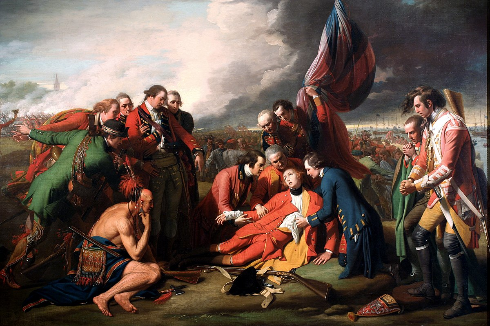
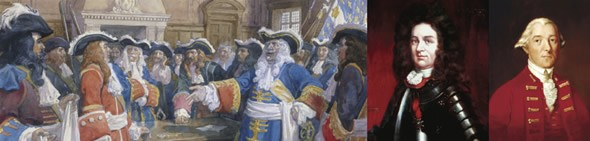

When Europeans explored Canada they found all regions occupied by native peoples they called Indians, because the first explorers thought they had reached the East Indies. The native people lived off the land, some by hunting and gathering, others by raising crops. The Huron-Wendat of the Great Lakes region, like the Iroquois, were farmers and hunters. The Cree and Dene of the Northwest were hunter-gatherers. The Sioux were nomadic, following the bison (buffalo) herd. The Inuit lived off Arctic wildlife. West Coast natives preserved fish by drying and smoking. Warfare was common among Aboriginal groups as they competed for land, resources and prestige.
The arrival of European traders, missionaries, soldiers and colonists changed the native way of life forever. Large numbers of Aboriginals died of European diseases to which they lacked immunity. However, Aboriginals and Europeans formed strong economic, religious and military bonds in the first 200 years of coexistence which laid the foundations of Canada.
The First Europeans
The Vikings from Iceland who colonized Greenland 1,000 years ago also reached Labrador and the island of Newfoundland. The remains of their settlement, l’Anse aux Meadows, are a World Heritage site.
European exploration began in earnest in 1497 with the expedition of John Cabot, who was the first to draw a map of Canada’s East Coast.

John Cabot, an Italian immigrant to England, was the first to map Canada’s
Exploring a River, Naming Canada
Between 1534 and 1542, Jacques Cartier made three voyages across the Atlantic, claiming the land for King Francis I of France. Cartier heard two captured guides speak the Iroquoian word kanata, meaning “village.” By the 1550s, the name of Canada began appearing on maps.
Royal New France
In 1604, the first European settlement north of Florida was established by French explorers Pierre de Monts and Samuel de Champlain, first on St. Croix Island (in present-day Maine), then at Port-Royal, in Acadia (present-day Nova Scotia). In 1608 Champlain built a fortress at what is now Québec City. The colonists struggled against a harsh climate. Champlain allied the colony with the Algonquin, Montagnais, and Huron, historic enemies of the Iroquois, a confederation of five (later six) First Nations who battled with the French settlements for a century. The French and the Iroquois made peace in 1701.
The French and Aboriginal people collaborated in the vast fur-trade economy, driven by the demand for beaver pelts in Europe. Outstanding leaders like Jean Talon, Bishop Laval, and Count Frontenac built a French Empire in North America that reached from Hudson Bay to the Gulf of Mexico
(From Left to Right) 
Count Frontenac refused to surrender Quebec to the English in 1690, saying: “My only reply will be from the mouths of my cannons!” Pierre Le Moyne, Sieur d’Iberville, was a great hero of New France, winning many victories over the English, from James Bay in the north to Nevis in the Caribbean, in the late 17th and early 18th centuries.
Sir Guy Carleton (Lord Dorchester), as Governor of Quebec, defended the rights of the Canadiens, defeated an American military invasion of Quebec in 1775, and supervised the Loyalist migration to Nova Scotia and Quebec in 1782-83.
[ See larger version ]
Struggle for a Continent
In 1670, King Charles II of England granted the Hudson’s Bay Company exclusive trading rights over the watershed draining into Hudson Bay. For the next 100 years the Company competed with Montreal-based traders. The skilled and courageous men who travelled by canoe were called voyageurs and coureurs des bois, and formed strong alliances with First Nations.
English colonies along the Atlantic seaboard, dating from the early 1600s, eventually became richer and more populous than New France. In the 1700s France and Great Britain battled for control of North America. In 1759, the British defeated the French in the Battle of the Plains of Abraham at Québec City — marking the end of France’s empire in America. The commanders of both armies, Brigadier James Wolfe and the Marquis de Montcalm, were killed leading their troops in battle.
The Province of Quebec
Following the war, Great Britain renamed the colony the “Province of Quebec.” The Frenchspeaking Catholic people, known as habitants or Canadiens, strove to preserve their way of life in the English-speaking, Protestant-ruled British Empire.
A Tradition of Accommodation
To better govern the French Roman Catholic majority, the British Parliament passed the Quebec Act of 1774. One of the constitutional foundations of Canada, the Quebec Act accommodated the principles of British institutions to the reality of the province. It allowed religious freedom for Catholics and permitted them to hold public office, a practice not then allowed in Britain. The Quebec Act restored French civil law while maintaining British criminal law.
United Empire Loyalists
In 1776, the 13 British colonies to the south of Quebec declared independence and formed the United States. North America was again divided by war. More than 40,000 people loyal to the Crown, called “Loyalists,” fled the oppression of the American Revolution to settle in Nova Scotia and Quebec. Joseph Brant led thousands of Loyalist Mohawk Indians into Canada. The Loyalists came from Dutch, German, British, Scandinavian, Aboriginal and other origins and from Presbyterian, Anglican, Baptist, Methodist, Jewish, Quaker, and Catholic religious backgrounds. About 3,000 black Loyalists, freedmen and slaves, came north seeking a better life. In turn, in 1792, some black Nova Scotians, who were given poor land, moved on to establish Freetown, Sierra Leone (West Africa), a new British colony for freed slaves.
The Beginnings of Democracy
Democratic institutions developed gradually and peacefully. The first representative assembly was elected in Halifax, Nova Scotia, in 1758. Prince Edward Island followed in 1773, New Brunswick in 1785. The Constitutional Act of 1791 divided the Province of Quebec into Upper Canada (later Ontario), which was mainly Loyalist, Protestant and English-speaking, and Lower Canada (later Quebec), heavily Catholic and French-speaking.
The Act also granted to the Canadas, for the first time, legislative assemblies elected by the people. The name Canada also became official at this time and has been used ever since. The Atlantic colonies and the two Canadas were known collectively as British North America.
Photo described below
The first elected Assembly of Lower Canada, in Québec City, debates
whether to use both French and English, January 21, 1793
Abolition of Slavery
Slavery has existed all over the world, from Asia, Africa and the Middle East to the Americas. The first movement to abolish the transatlantic slave trade emerged in the British Parliament in the late 1700s. In 1793, Upper Canada, led by Lieutenant Governor John Graves Simcoe, a Loyalist military officer, became the first province in the Empire to move toward abolition. In 1807, the British Parliament prohibited the buying and selling of slaves, and in 1833 abolished slavery throughout the Empire. Thousands of slaves escaped from the United States, followed “the North Star” and settled in Canada via the Underground Railroad, a Christian anti-slavery network.
A Growing Economy
The first companies in Canada were formed during the French and British regimes and competed for the fur trade. The Hudson’s Bay Company, with French, British and Aboriginal employees, came to dominate the trade in the northwest from Fort Garry (Winnipeg) and Fort Edmonton to Fort Langley (near Vancouver) and Fort Victoria—trading posts that later became cities.
The first financial institutions opened in the late 18th and early 19th centuries. The Montreal Stock Exchange opened in 1832. For centuries Canada’s economy was based mainly on farming and on exporting natural resources such as fur, fish and timber, transported by roads, lakes, rivers and canals.
Photo described below
(From left to right)
Lieutenant Colonel John Graves Simcoe was Upper Canada’s first Lieutenant Governor and founder of the City of York (now Toronto). Simcoe also made Upper Canada the first province in the British Empire to abolish slavery
Mary Ann Shadd Cary was an outspoken activist in the movement to abolish slavery in the U.S.A. In 1853 she became the first woman publisher in Canada, helping to found and edit The Provincial Freeman, a weekly newspaper dedicated to anti-slavery, black immigration to Canada, temperance (urging people to drink less alcohol), and upholding British rule
[ See larger version ]
Photo described below
French-Canadian militiamen
helped defend Canada
in the War of 1812
[ See larger version ]
The War of 1812: The Fight for Canada
After the defeat of Napoleon Bonaparte’s fleet in the Battle of Trafalgar (1805), the Royal Navy ruled the waves. The British Empire, which included Canada, fought to resist Bonaparte’s bid to dominate Europe. This led to American resentment at British interference with their shipping. Believing it would be easy to conquer Canada, the United States launched an invasion in June 1812. The Americans were mistaken. Canadian volunteers and First Nations, including Shawnee led by Chief Tecumseh, supported British soldiers in Canada’s defence. In July, Major-General Sir Isaac Brock captured Detroit but was killed while defending against an American attack at Queenston Heights, near Niagara Falls, a battle the Americans lost. In 1813, Lieutenant-Colonel Charles de Salaberry and 460 soldiers, mostly French Canadiens, turned back 4,000 American invaders at Châteauguay, south of Montreal. In 1813 the Americans burned Government House and the Parliament Buildings in York (now Toronto). In retaliation in 1814, Major-General Robert Ross led an expedition from Nova Scotia that burned down the White House and other public buildings in Washington, D.C. Ross died in battle soon afterwards and was buried in Halifax with full military honours.
By 1814, the American attempt to conquer Canada had failed. The British paid for a costly Canadian defence system, including the Citadels at Halifax and Québec City, the naval drydock at Halifax and Fort Henry at Kingston—today popular historic sites. The present-day Canada-U.S.A. border is partly an outcome of the War of 1812, which ensured that Canada would remain independent of the United States.
Rebellions of 1837–38
In the 1830s, reformers in Upper and Lower Canada believed that progress toward full democracy was too slow. Some believed Canada should adopt American republican values or even try to join the United States. When armed rebellions occurred in 1837–38 in the area outside Montreal and in Toronto, the rebels did not have enough public support to succeed. They were defeated by British troops and Canadian volunteers. A number of rebels were hanged or exiled; some exiles later returned to Canada.
Lord Durham, an English reformer sent to report on the rebellions, recommended that Upper and Lower Canada be merged and given responsible government. This meant that the ministers of the Crown must have the support of a majority of the elected representatives in order to govern. Controversially, Lord Durham also said that the quickest way for the Canadiens to achieve progress was to assimilate into English-speaking Protestant culture. This recommendation demonstrated a complete lack of understanding of French Canadians, who sought to uphold the distinct identity of French Canada.
Some reformers, including Sir Étienne-Paschal Taché and Sir George-Étienne Cartier, later became Fathers of Confederation, as did a former member of the voluntary government militia in Upper Canada, Sir John A. Macdonald.
Responsible Government
In 1840, Upper and Lower Canada were united as the Province of Canada. Reformers such as Sir Louis-Hippolyte La Fontaine and Robert Baldwin, in parallel with Joseph Howe in Nova Scotia, worked with British governors toward responsible government.
The first British North American colony to attain full responsible government was Nova Scotia in 1847–48. In 1848–49 the governor of United Canada, Lord Elgin, with encouragement from London, introduced responsible government.
This is the system that we have today: if the government loses a confidence vote in the assembly it must resign. La Fontaine, a champion of democracy and French language rights, became the first leader of a responsible government in the Canadas.